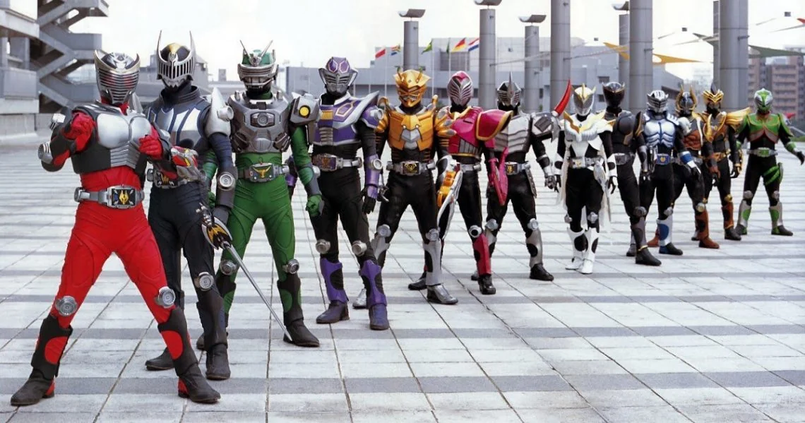

REVIEW
Misael Tavarez: April 21, 2026
Based off of the original series with the same name this movie is a technical prequel. It follows a different timeline from the original series introducing new characters and different evernts I really liked the original and this movie is no different. It has all the action, suspense, and drama that the original had plus more. My favorite thing about it is the fact that when it was released, the views could vote online for to different endings. This made it much more intresting compared to any other movie I have seen. Personally I would give it an 8/10 mainly due to the CGI and trying to find where to watch it.
